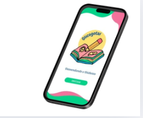
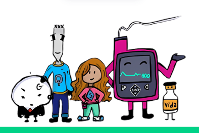
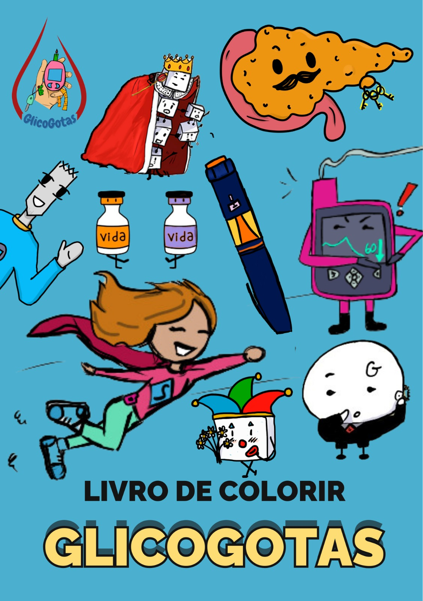

Nosso Ecossistema
Ferramentas criadas com carinho para educar, engajar e divertir.

App Glicogotas
Uma aventura interativa com minigames que ensinam sobre medição de glicose, alimentação e muito mais.
Ver mais →
Livreto
Passatempos, desenhos para colorir e histórias que reforçam o aprendizado de forma divertida e offline.
Ver mais →.png)
Jogos da Tabuleiro
Reúna a família e os amigos para jogos cooperativos sobre os altos e baixos da glicemia.
Ver mais →
Gligo Goods
Solte a criatividade com nossos personagens e aprenda enquanto colore. Uma atividade relaxante e educativa.
Ver mais →